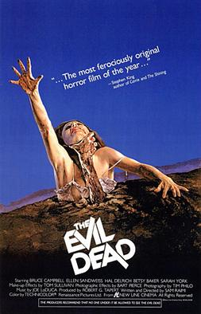
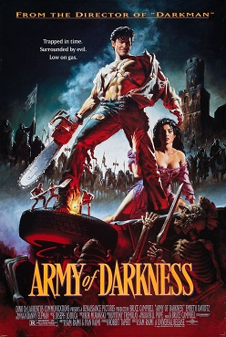

Original Trilogy
The Evil Dead (1981)
The Evil Dead is a 1981 American supernatural horror film written and directed by Sam Raimi (in his feature directorial debut). The film stars Bruce Campbell, Ellen Sandweiss, Richard DeManincor, Betsy Baker, and Theresa Tilly. The story focuses on five college students vacationing in an isolated cabin in a remote wooded area. After they find an audio tape that, when played, releases a legion of demons and spirits, four members of the group suffer from demonic possession, forcing the fifth member, Ash Williams (Campbell), to survive an onslaught of increasingly gory mayhem.
Evil Dead 2: Dead by Dawn (1987)
Evil Dead II (also known in publicity materials as Evil Dead 2: Dead by Dawn) is a 1987 American comedy horror film directed by Sam Raimi, who co-wrote it with Scott Spiegel. The second installment in the Evil Dead film series, it is considered both a remake and sequel (or "re-quel") to The Evil Dead (1981). It stars Bruce Campbell as Ash Williams, who vacations with his girlfriend to a remote cabin in the woods. He discovers an audio tape of recitations from a book of ancient texts, and when the recording is played, it unleashes a number of demons which possess and torment him.
Army of Darkness (1992)
Army of Darkness is a 1992 American dark fantasy horror comedy film directed, co-written, and co-edited by Sam Raimi. The film is the third installment in the Evil Dead film series and the sequel to Evil Dead II (1987). Starring Bruce Campbell and Embeth Davidtz, it follows Ash Williams (Campbell) as he is trapped in the Middle Ages and battles the undead in his quest to return to the present.